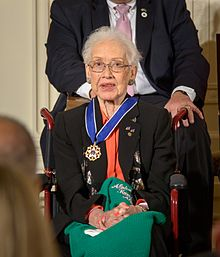

Katherine foi co-autora de 26 artigos científicos. A NASA mantém uma lista de artigos mais significativos de Johnson com links para sua ferramenta de busca de arquivo para encontrar outros. O impacto de seu legado pioneira para a ciência espacial e computação lhe rendeu diversas honrarias e medalhas, além de servir como modelo para outras estudantes. Desde 1979, antes de se aposentar da NASA, sua biografia tem lugar de destaque entre a lista de negros pioneiros em ciência e tecnologia.
Em 24 de novembro de 2015, o presidente Barack Obama incluiu Katherine na exclusiva lista de dezessete estadunidenses que receberam a Medalha Presidencial da Liberdade e seu nome foi citado como exemplo pioneiro de mulheres negras na ciência, tecnologia, engenharia e matemática.
